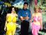
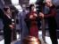

|
 |
| Ubicació >> Nava Cercar |
|
|
|
 | |
| Descàrregues: 44,
Puntuació: Descripció: Xvid. DVD+TDT. Àudio dual: català - anglès. Àudio per Celdelnord i Pizarrín. Muntat per Nava |  |
| Categoria: Arrel>> Sèries>> Star Trek: TOS>> 1a Temporada | |
 Star Trek TOS [1x22] El retorn dels archons
Star Trek TOS [1x22] El retorn dels archons
| Descàrregues: 45,
Puntuació: Descripció: Xvid. DVD+TDT. Àudio dual: català - anglès. Àudio per Celdelnord. Muntat per Nava | |
| Categoria: Arrel>> Sèries>> Star Trek: TOS>> 1a Temporada | |
| Descàrregues: 46,
Puntuació: Descripció: Xvid. DVD+TDT. Àudio dual: català - anglès. Àudio per Celdelnord, Pizarrín i Teucre. Muntat per Nava |  |
| Categoria: Arrel>> Sèries>> Star Trek: TOS>> 1a Temporada | |
| Descàrregues: 189,
Puntuació: Descripció: Xvid. DVD+TDT. Àudio dual: català - anglès. Àudio per Celdelnord i Pizarrín. Muntat per Nava |  |
| Categoria: Arrel>> Sèries>> Star Trek: TOS>> 1a Temporada | |
| Descàrregues: 43,
Puntuació: Descripció: Cortesia de Nava i Celdelnord per mecanoscrit | |
| Categoria: Arrel>> Pel·lícules>> Comèdia/Humor | |
| Descàrregues: 61,
Puntuació: Descripció: Xvid. DVD+TDT. Àudio dual: català - anglès. Àudio per Celdelnord i Pizarrín. Muntat per Nava | |
| Categoria: Arrel>> Sèries>> Star Trek: TOS>> 1a Temporada | |
| Descàrregues: 67,
Puntuació: Descripció: Xvid. DVD+TDT. Àudio dual: català - anglès. Àudio per Celdelnord i Pizarrín. Muntat per Nava |  |
| Categoria: Arrel>> Sèries>> Star Trek: TOS>> 1a Temporada | |
| Descàrregues: 60,
Puntuació: Descripció: Xvid. DVD+TDT. Àudio dual: català - anglès. Àudio per Celdelnord, Pizarrín i Xordi. Muntat per Nava |  |
| Categoria: Arrel>> Sèries>> Star Trek: TOS>> 1a Temporada | |
| Descàrregues: 64,
Puntuació: Descripció: Xvid. DVD+VHS. Àudio dual: català - anglès. Àudio per Rocafort i Ermoi. Muntat per Nava |  |
| Categoria: Arrel>> Sèries>> Star Trek TNG>> 1a Temporada | |
| Descàrregues: 121,
Puntuació: Descripció: Xvid. DVD+TDT. Àudio dual: català - anglès. Produït per Panotxa. Àudio per Xordi. Muntat per Nava |  |
| Categoria: Arrel>> Sèries>> El nan roig [remasteritzat]>> 3a Temporada | |
|